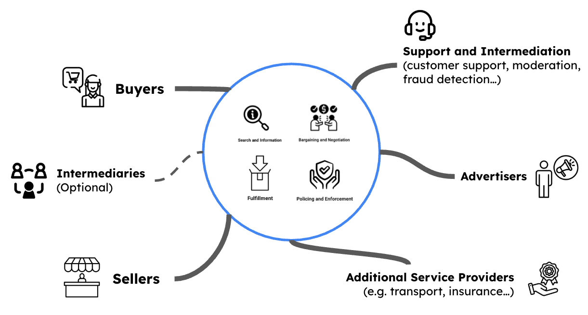

Marketplace Strategies: What Digital Marketplaces Sell?
IN THIS SECTION, YOU WILL: Learn that Digital marketplaces facilitate transactions by reducing search, negotiation, and enforcement costs while monetizing through commissions, subscriptions, promoted listings, and value-added services.
KEY POINTS:
- Digital marketplaces act as intermediaries, not direct sellers, providing trust, efficiency, and infrastructure.
- Their core value proposition is reducing transaction costs across search, negotiation, and enforcement.
- Different monetization models include commission fees, paid subscriptions, promoted listings, and value-added services.
- The IT architecture of marketplaces focuses on scalability, automation, security, and seamless multi-sided interactions.
- Technologies like AI, cloud computing, and API-driven ecosystems enhance marketplace efficiency and reliability.
Digital marketplaces facilitate transactions between buyers and sellers but do not act as the sellers or buyers themselves. They primarily sell a reduction in transaction costs across three dimensions: Search and Information Costs, Bargaining and Negotiation Costs, and Policing and Enforcement Costs. Various monetization strategies exist, including paid subscriptions, promoted listings, and additional services that reduce transaction costs.
A digital marketplace serves as an intermediary platform that connects buyers and sellers, facilitating transactions without holding inventory or providing the services themselves. Unlike traditional retailers, which manage their stock and directly sell goods or services, digital marketplaces provide infrastructure, trust, and efficiency to enable commerce (Figure 1).
 Figure 1: The structure of multi-sided marketplaces, where a central platform facilitates interactions among various participants including buyers, sellers, advertisers, support agents, additional service providers (e.g., transport, insurance), and optionally intermediaries. The platform delivers core functions such as search and information, bargaining and negotiation, fulfillment, and policing and enforcement to enable smooth, trusted, and efficient transactions. Each stakeholder interacts with the platform in different ways, contributing to and benefiting from the ecosystem’s value exchange.
Some well-known examples include:
- Uber (facilitates transportation transactions between drivers and riders)
- Etsy (connects artisans with buyers)
- Airbnb (enables lodging transactions between hosts and guests)
- Amazon Marketplace (allows third-party sellers to reach buyers via Amazon’s platform)
The Core Value Proposition: Reducing Transaction Costs
Digital marketplaces generate value by reducing the costs associated with transactions.
Figure 2: Marketplaces sell a reduction in transaction costs: Search and Information Costs, Bargaining and Negotiation Costs, Policing and Enforcement Costs.
These transaction costs fall into three primary categories (Figure 2):
-
Search and Information Costs: This cost includes the effort and time required for buyers and sellers to find each other and access relevant information. Marketplaces mitigate this by providing centralized platforms with search tools, filtering mechanisms, and reviews. Example: Craigslist simplifies search by acting as a directory, while Amazon enhances search through advanced recommendation algorithms.
-
Bargaining and Negotiation Costs: These are costs related to setting a price, defining terms, and ensuring mutual agreement between buyers and sellers. Marketplaces reduce these by offering fixed pricing models, automated pricing tools, or pre-negotiated agreements. Example: Uber eliminates fare negotiations by using an algorithm to set prices dynamically.
-
Policing and Enforcement Costs: These refer to the costs of ensuring that both parties fulfill their obligations, that transactions are fair, and that disputes are resolved efficiently. Marketplaces manage these by implementing rating systems, buyer/seller guarantees, and dispute resolution services. For example, Airbnb provides host and guest reviews, secure payments, and insurance to protect against damages.
Here are a few examples of marketplaces and their transaction cost-reduction strategies:
- Craigslist: Primarily reduces Search and Information Costs by aggregating classified listings but does little to reduce other transaction costs.
- Uber: Reduces Search and Information Costs by automatically matching drivers and riders, eliminates Bargaining and Negotiation Costs through fixed fares, and lowers Policing and Enforcement Costs via insurance and refund policies.
- Amazon Marketplace: Reduces all three cost types by providing search tools, handling payments, and offering buyer protection policies.
Monetization Strategies in Digital Marketplaces
Since the primary value offered by marketplaces is transaction cost reduction, monetization strategies revolve around charging users for additional efficiencies:
- Commission Fees: Marketplaces often take a percentage of each transaction. For example, Amazon and Airbnb charge sellers/hosts a commission on every sale.
- Paid Subscriptions: Sellers or buyers can subscribe for premium features such as enhanced visibility, faster payouts, or better customer support. Example: Etsy Plus for sellers.
- Promoted Listings & Ads: Sellers can pay to boost their visibility, reducing Search and Information Costs for potential buyers. Example: eBay’s promoted listings.
- Value-Added Services: Marketplaces can offer logistics, insurance, and verification services. Example: Amazon FBA (Fulfilled by Amazon) handles warehousing and shipping for sellers.
Building Digital Marketplaces
Digital marketplaces do not sell physical goods or services directly. Instead, they sell efficiently by reducing transaction costs, making it easier, faster, and safer for buyers and sellers. Their monetization strategies capitalize on further reducing these costs, creating additional value for their users.
By understanding these fundamental dynamics, businesses can effectively leverage digital marketplaces—either by participating as sellers or by developing new marketplace models tailored to specific industries and consumer needs.
The IT architecture of digital marketplaces is distinct from traditional e-commerce platforms due to its focus on scalability, automation, and multi-sided interactions. Unlike single-vendor online stores, digital marketplaces require a robust technology stack that supports seamless interactions between multiple buyers and sellers while ensuring platform reliability and security.
Key components of a digital marketplace architecture include:
-
Scalable Infrastructure: Digital marketplaces must handle high traffic volumes and dynamic workloads, requiring cloud-native architectures using platforms like AWS, Google Cloud, or Azure. Microservices and containerization (e.g., Kubernetes) are often leveraged to ensure scalability and resilience.
-
Data and Matching Algorithms: Advanced data analytics and AI-driven recommendation engines optimize Search and Information Costs by efficiently matching buyers with relevant products, services, or providers. Marketplaces like Airbnb and Uber rely on real-time data processing to enhance user experience.
-
Automated Payment and Escrow Systems: Secure, frictionless financial transactions are crucial, requiring integration with payment gateways such as Stripe, PayPal, or proprietary fintech solutions. Marketplaces implement escrow and payout automation to balance trust and liquidity.
-
User Trust and Verification: Identity verification, fraud detection, and rating systems significantly reduce Policing and Enforcement Costs. Techniques such as AI-based fraud prevention, KYC (Know Your Customer) processes, and blockchain-based smart contracts are increasingly being used.
-
API-Driven Ecosystems: Many marketplaces extend their functionalities through APIs, allowing third-party developers to build integrations and enhance platform capabilities. Open API ecosystems facilitate partnerships, enabling additional logistics, insurance, or compliance automation services.
-
Resilient and Secure Architecture: Cybersecurity and data privacy are critical, necessitating encryption, multi-factor authentication, and compliance with data protection regulations like GDPR and CCPA. Distributed architectures ensure redundancy and business continuity in case of system failures.
The IT architecture of digital marketplaces is built for scalability, security, and automation, distinguishing it from traditional e-commerce platforms. These platforms provide a seamless and trusted transaction environment by leveraging cloud infrastructure, AI-driven recommendations, secure payment systems, and API integrations. Understanding these technical and business dynamics enables companies to effectively build, participate in, or enhance digital marketplaces for various industries and needs.
To Probe Further
- History of Online Marketplaces, 2014, by Andrew Adams and Lance Martin
- Marketplace, 2021, Wikipedia
- A History of Shopping, Marketplaces, and Experiences, 2021, by Ezra Stark
- Ezra Stark, 2018, sutherlandlabs.com
- Search, Matching, and the Role of Digital Marketplace Design in Enabling Trade: Evidence from Airbnb, 2017, by Andrey Fradkin
- Digital Marketplaces, 2017, by Andrey Fradkin
- The Economics of Digital Marketplaces, 2018, by Andrey Fradkin
Questions to Consider
- How do digital marketplaces differ from traditional e-commerce platforms in terms of business model and operations?
- What are the biggest challenges in ensuring trust and security in digital marketplaces?
- How do different types of transaction costs impact buyer and seller behavior?
- What are some innovative ways marketplaces can further reduce transaction costs?
- How can AI and data analytics improve search, matching, and pricing in digital marketplaces?
- What are the potential downsides of marketplace platforms controlling pricing and transaction policies?
- How do various monetization strategies affect seller participation and buyer experience?
- What IT architecture decisions are crucial for building a scalable and resilient digital marketplace?
- How do marketplace regulations (such as GDPR or competition laws) influence platform design and operations?
- What new industries or niche markets could benefit from a marketplace model that reduces transaction costs?
On Strategy ← Value-Based Strategy |
On Strategy Connecting Marketing, Sales, and Customer Service Strategies → |